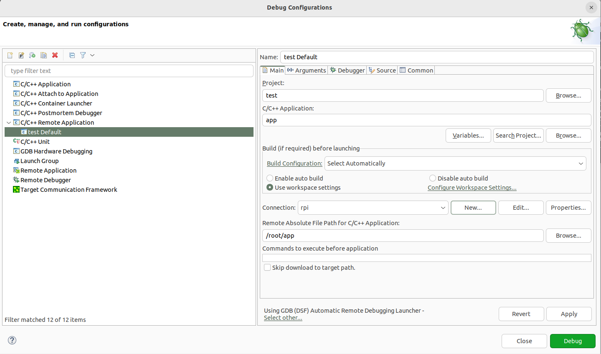

Acknowledgements
This document is based on a previous work of Dr. Sergio Esquembri and Dr. Francisco Javier Jiménez from the Department of Telematics and Electronics Engineering of Madrid’s Technical University using RPI Model B.
 Embedded Linux Systems: Using Buildroot for building Embedded
Linux Systems on Raspberry Pi 3 Model B by Mariano Ruiz is licensed
under a Creative Commons Attribution-ShareAlike 4.0 International
License.
Embedded Linux Systems: Using Buildroot for building Embedded
Linux Systems on Raspberry Pi 3 Model B by Mariano Ruiz is licensed
under a Creative Commons Attribution-ShareAlike 4.0 International
License.
Table of contents
3 Building linux using buildroot 7
3.1 Elements needed for the execution of these LABS 7
3.3 Configuring Buildroot for RPI3. 11
3.6 Booting the Raspberry Pi. 17
3.7 Connecting the RPI to the network 23
3.7.1 Inspecting the configuration of the network interface generated automatically by Buildroot 23
4 Using the integrated development environment Eclipse/CDT 26
4.1 Eclipse IDE for C/C++ developers 26
4.2 Cross-Compiling applications using Eclipse 26
4.4 Moving the binary to the target 32
4.5 Executing the application 33
4.6 Automatic debugging using gdb and gdbserver 33
5 Preparing the linux virtual machine. 36
5.1 Download VMware Workstation Player. 36
5.2 Installing Ubuntu 22.04 LTS as a virtual machine. 36
5.5 Installing packages for supporting Buildroot. 37
5.6 Installing packages supporting Eclipse 37
Table of Figures
Fig. 1: Main screen of VMware player with some VM available to be executed. 7
Fig. 2: Ubuntu Virtual Machine login screen. 8
Fig. 4: Example of Downloading buildroot source code. 9
Fig. 5: Buildroot folder (the folder name depends on the version downloaded). 10
Fig. 6: Dash home, Terminal application 10
Fig. 7: Buildroot setup screen. 11
Fig. 8: Successful compilation and installation of Buildroot 16
Fig. 9: Schematic representation of the Buildroot tool. Buildroot generates the root file system, the kernel image, the bootloader, and the toolchain. Figure copied from “Bootlin” training materials (http://bootlin.com/training/) 17
Fig. 10: images folder contains the binary files for our embedded system. 17
Fig. 11: RaspBerry-Pi 3 Model B+ hardware with main elements identified. 18
Fig. 12: Raspberry-PI 3 header terminal identification. The figure displays a PI 3 B model. 19
Fig. 13: Identification of the terminals in the USB-RS232 adapter 19
Fig. 14: Booting process for BCM2837 processor in the raspberry-pi. 20
Fig. 15: Putty program main window. 22
Fig. 17: Summary of the different configurations for developing applications for embedded systems. Figure copied from “Free Electrons” training materials (http://free-electrons.com/training/) 26
Fig. 18: Cross-compiling tools installed in the host computer 27
Fig. 19: Selection of the workspace for Eclipse. Use a folder in your account. 27
Fig. 20: Eclipse welcome window. 28
Fig. 21: Eclipse main window. 28
Fig. 22: Basic C project creation in Eclipse 29
Fig. 23: Cross-compiler prefix and path window. 30
Fig. 24: Hello world example. 30
Fig. 25: ToolChain Editor should be configured to use Cross GCC. 31
Fig. 26: Cross tools locate on (path). The path shown in this figure is an example. Use always the path of your toolchain. 31
Fig. 27: Include search path. 32
Fig. 28: Libraries search path. 32
Fig. 29: Eclipse project compiled (Binaries has been generated) 33
Fig. 30: “Connect to Server” option in Nautilus explorer 33
Fig. 31: Run test program in Raspberry Pi 34
Fig. 32: Installing additional software in Eclipse 34
Fig. 33: Creating a Debug Configuration 35
Fig. 34: Debug configuration, including the path to locate the cross gdb tool. 36
Fig. 35: Synaptic program from Dash 38
SCOPE
T
Document Overview
This document describes the steps to develop an embedded Linux-based system using the Raspberry PI board. The document has been specifically written to use a Raspberry PI development system based on the BCM2837 processor. All the software elements used have a GPL license.
[Time to complete the tutorial]: The time necessary to complete all the tutorial steps is approximately 8 hours. |
|
|---|---|
Read all the instructions carefully before executing the practical part; otherwise, you will find errors and probably unpredicted errors. In parallel, you need to review the slides available at the Moodle site or at [RD1]
Acronyms
CPU |
Central Processing Unit |
|---|---|
EABI |
Extended Application Binary Interface |
EHCI |
Enhanced Host Controller Interface |
I/O |
Input and Output |
MMC |
Multimedia card |
NAND |
Flash memory type for fast sequential read and write |
PCI |
Peripheral Component Interconnect – computer bus standard |
PCI Express |
Peripheral Component Interconnect Express |
OS |
Operating system |
UART |
Universal Asynchronous Receiver Transmitter |
USB |
Universal Serial Bus |
REFERENCED DOCUMENTS
References
Embedded Linux system development.
Slides at https://moodle.upm.es/titulaciones/oficiales/course/view.php?id=<yourcourse>
Mastering Embedded Linux Programming - Second Edition. Packt. https://www.packtpub.com/product/mastering-embedded-linux-programming-second-edition/9781787283282
Raspberry-Pi User Guide. Reference Manual.
www.myraspberry-pi.org/wp-content/…/Raspberry.Pi_.User_.Guide_.pdf
Building linux using buildroot
Elements needed for the execution of these LABS
In order to execute this lab properly, you need the following elements:
The VMware player software version 16.0 or above. Available at www.wmware.com (free download and use). This software has already been installed on the laboratory desktop computer.
A VMWare virtual machine with Ubuntu 22.04 and all the software packages installed is already available on the Desktop. This virtual machine is available for your personal use. If you want to set up your virtual machine by yourself, follow the instructions provided in Annex I.
A Raspberry Pi, accessories and a USB cable are available at the laboratory.
Basic knowledge of Linux commands.
Starting the VMware
Start VMware Player and open the RPI Virtual Machine. Wait until the welcome screen is displayed (see Fig. 1 and Fig. 2). Login as “ubuntu” user using the password “ubuntu”.

Fig. 1: Main screen of VMware player with some VM available to be executed.

Fig. 2: Ubuntu Virtual Machine login screen.
Open the Firefox web browser and download from https://buildroot.org/, the version identified as buidlroot2023-08-3 (use the download link, see Fig. 3, and navigate searching for earlier releases if necessary, https://buildroot.org/downloads/ ). Save the file to the Documents folder in your account (Fig. 4).

Fig. 3 Buildroot home page.
Buildroot is a tool to generate embedded Linux systems in our PC, and then this Linux will be installed in the target.

Fig. 4: Example of Downloading buildroot source code.
Create a folder “rpi” in “Documentes”. Copy the file to the “Documents/rpi” folder and decompress the file (Fig. 5).

Fig. 5: Buildroot folder (the folder name depends on the version downloaded).
Right-click in the window and execute “Open in Terminal” or execute the Terminal application from Dash home as shown in Fig. 6 (if “Open in Terminal” is not available, search how to install it in Ubuntu).

Fig. 6: Dash home, Terminal application
In some seconds, a command window is displayed. Then, execute these commands:
[Help]: For this course, you will need to become familiar with the Linux Terminal use. On the Moodle site of this course, you can find a cheat sheet with the basic Linux commands. |
|
|---|---|
[Help]: In a Linux terminal, the “TAB” key helps you to autocomplete the commands, folders, and file names. You can find a description of “make” application at this link https://www.gnu.org/software/make/manual/make.pdf |
|
|---|---|
In some seconds, you will see a new window similar to Fig. 7.
{kind=link}
Fig. 7: Buildroot setup screen.
Configuring Buildroot for RPI3.
Once the Buildroot configuration is started, it is necessary to configure the different items. You need to navigate the different menus and select the installation elements. Table I contains the specific configuration of Buildroot for installing it in the Raspberry Pi. Depending on the downloaded version, the organization and the items displayed can differ. If an item of buildroot configuration does not appear in the Table I leaves it with its default value.
[Help]: The Buildroot configuration is an iterative process. In order to set up your embedded Linux system, you will need to execute the configuration several times. |
|
|---|---|
Main Item |
Subitem |
Value |
Comments |
|---|---|---|---|
T arget options |
Target A rchitecture |
AArch64 (little endian) |
ARM 64 bits |
Target A rchitecture Variant |
Cortex-A53 |
||
Flo ating-point strategy |
VFPv4 |
||
MMU Page Size |
4kB |
||
Target Binary Format |
elf |
||
Tool chain |
Cross Compiler, linker, and libraries to be built to compile our embedded application |
||
Toolchain Type |
Buildroot toolchain |
The Embedded system will be compiled with tools integrated into Buildroot |
|
Custom toolchain vendor name |
buidlroot |
||
C library |
glibc |
Library containing the typical C libraries used in Linux environments (stdlib, stdio, etc) |
|
Kernel Headers |
Same as kernel being built |
||
Custom Kernel Headers Series |
5.10.x |
||
Binutils Version |
binutils 2.40 |
Binutils contains tools to manage the binary files obtained in the compilation of the different applications |
|
GCC compiler Version |
gcc 12.x |
GCC tools version to be installed |
|
Enable C++ support |
Yes |
Including support for C++ programming, compiling, and linking. |
|
Build cross gdb for the host |
yes Add Python support |
Includes the support for GDB. GCC debugger. |
|
GDB debugger version |
Gdb 11.x |
||
Build op tions |
Default values |
How Buildroot will build the code. Leave default values. |
|
System C onfigur ation* |
|||
Root filesystem skeleton |
Default target skeleton |
Linux folder organization for the embedded system |
|
System Hostname |
buildroot |
Name of the embedded system |
|
System Banner |
Linux RPI 3 |
Banner |
|
Passwords encoding |
sha-256 |
||
Init System |
Busybox |
||
/dev management |
Dynamic using devtmpfs + mdev |
||
Path to permissions table |
sy stem/device_table.txt |
Text files with permissions for /dev files |
|
Enable root login with password |
Yes |
||
Root password |
rpi |
||
/bin/sh |
Busybox’ default shell |
||
Run a getty: Port to run a getty |
tty PORT: console Keep kernel default vt100 |
Linux device file with the port to run getty (login) process. |
|
remount root filesystem read-write during boot |
Yes |
||
Network interface to configure trough DHCP |
eth0 |
||
Set the system’s default PATH |
/bin:/ sbin:/usr/bin:/usr/sbin |
||
Purge unwanted locales |
Yes |
||
Custom scripts to run before creating filesystem images |
<path_to_ buidlroot>/board/raspbe rrypi3-64/post-build.sh |
<p ath_to_buidlroot> path where buildroot source is |
|
Custom scripts to run inside the fakeroot environment |
|||
Custom scripts to run after creating filesystem images |
<path_to_ buidlroot>/board/raspbe rrypi3-64/post-image.sh |
||
Linux K ernel |
|||
Kernel Version |
Custom tarball |
||
URL of custom kernel tarball |
$(call github, raspberrypi,linux,0b54d bda3cca2beb51e236a25738 784e90853b64)/linux-0b5 4dbda3cca2beb51e236a257 38784e90853b64.tar.gz |
||
Kernel co nfiguration |
Using and in-tree defconfig file |
||
Defconfig name |
bcmrpi3 |
||
Kernel binary format |
Image |
||
Kernel compression format |
Gzip compression |
||
Build a Device Tree Blob (DTB) |
yes |
||
In-tree Device Tree Source file names |
b roadcom/bcm2710-rpi-3-b broadc om/bcm2710-rpi-3-b-plus b roadcom/bcm2837-rpi-3-b |
||
Need host OpenSSL |
Yes |
||
Linux Kernel Extensions |
Nothing |
||
Linux Kernel Tools |
Nothing |
||
Target Pac kages* |
|||
Busybox |
yes |
||
Busybox co nfiguration file to use |
package/b usybox/busybox.config |
||
Audio and video a pplications |
Default values |
||
C ompresssors and de compressors |
Default values |
||
Debugging, profiling and benchmark |
gdb, gdbserver |
||
D evelopments tools |
Default values |
||
Filesystem and flash utilities |
Default values |
||
Games |
Default values |
||
Graphic libraries and a pplications (gr aphic/text) |
Default values |
||
Hardware handling |
F irmware->rpi-firmware rpi 0/1/2/3 (bootcode.bin, Default, Extended) Path to a file stores as boot/config.txt board/raspberrypi3- 64/config_3_64bit.txt Path to a file stored as boot/cmdline.txt board/ra spberrypi/cmdline.txt install DTB overlays |
||
I nterpreters language and scripting |
Default values |
||
Libraries |
|||
Mi scellaneous |
Default |
||
Networking a pplications |
ifupdown scripts open ssh |
||
Package managers Real Time Shell and utilities System Tools Text Editors and viewers |
Default |
||
Fil esystem I mages |
|||
ext2/3/4 root filesystem |
ext4 exact size 400M Compression method no compression Remaining values-> default |
||
tar the root filesystem |
no compression |
||
Host util ities |
|||
host genimage |
Yes |
||
host dosfstools |
Yes |
||
host mtools |
Yes |
||
Host enviro nment-setup |
Yes |
||
Legacy config op tions* |
Default values |
Once you have configured all the menus, you need to exit, saving the values (File->Quit).
[Help]: The Buildroot configuration is stored in a file named “.config”. You should have a backup of this file. |
|
|---|---|
Compiling buildroot
In the Terminal Window executes the following command:
If everything is correct, you will see a final window similar to the one represented in Fig. 8.
[Time for this step]: In this step, buildroot will connect, using the internet, to different repositories. After downloading the code, Buildroot will compile the applications and generate a lot of files and folders. Depending on your internet speed access and the configuration chosen, this step could take up to one hour and a half. |
|
|---|---|
Warning. If you have errors in the buildroot configuration, you could obtain errors in this compilation phase. Check your configuration correctly. Use “make clean” to clean up your partial compilation. |
|
|---|---|
Warning. dl subfolder in your buildroot folder contains all the packages downloaded for the internet. If you want to move your buildroot configuration from one computer to another, avoiding the copy of the virtual machine, you can copy this folder. |
|
|---|---|

Fig. 8: Successful compilation and installation of Buildroot
Buildroot has generated some folders with different files and subfolders containing the tools for generating your Embedded Linux System. The next paragraph explains the main outputs obtained,
Buildroot Output.
The main output files of the execution of the previous steps can be located in the folder “./images”. Fig. 9 summarizes the use of Buildroot. Buildroot generates a bootloader, a kernel image, and a file system.
Fig. 9: Schematic representation of the Buildroot tool. Buildroot generates the root file system, the kernel image, the bootloader, and the toolchain. Figure copied from “Bootlin” training materials (http://bootlin.com/training/)
In our specific case, the folder content is shown in Fig. 10

Fig. 10: The images folder contains the binary files for our embedded system.
Copy the sdcard.img file to your SDcard using this Linux command in the Buildroot folder (sdb is typically the device assigned to the sdcard, unless you have other removable devices connected to the system):
$ sudo dd if=./images/sdcard.img of=/dev/sd<x> bs=10M //<x> is the identification used by Linux for your microSD card, tipically “b” or “c”, never use “a” because this is the operating system hardisk
Remember to format again the microSDcard if you need to repeat this process (linux gparted is an excellent tool to partition and format the SD card).
Booting the Raspberry Pi.
Fig. 11 displays a Raspberry Pi. The description of this card, its functionalities, interfaces, and connectors are explained in the ref [RD2]. The fundamental connection requires:
To connect a USB to RS232 adapter (provided) to the raspberry-pi expansion header (see Fig. 12 and Fig. 13). This adapter provides the serial line interface as a console in the Linux host operating system.
To connect the power supply with the micro-USB connector provided (5 v).
To connect the Ethernet cable to the RJ45 port if it is available (not the case of UPM Lab).

Fig. 11: RaspBerry-Pi 3 Model B+ hardware with main elements identified.
iwc
Fig. 12: Raspberry-PI 3 header terminal identification. The figure displays a PI 3 B model.
Fig. 13: Identification of the terminals in the USB-RS232 adapter
The booting process of the Raspberry Pi BCM2837B0 processor is depicted in Fig. 14. Take into account that this System On Chip (SoC), the BCM2837B0, contains two different processors: a GPU and an ARM processor. The programs bootcode.bin and start.elf are written explicitly for the GPU, and the source code is unavailable. Broadcom only provides details of this to customers who sign a commercial agreement. The last executable (start.elf) boots the ARM processor and allows the execution of ARM programs such as Linux OS kernel or other binaries such as u-boot bootloader.
Fig. 14: Booting process for BCM2837 processor in the raspberry-pi.
The config.txt file contains essential information to boot the Linux OS and perform the configuration of different hardware elements (look at http://elinux.org/RPiconfig and check the meaning of the different configuration parameters). Verify the content of the config.txt file generated by buildroot and complete it as depicted below.
In this example, once the ARM is released from reset, it executes the Image application. This binary application is the Linux Kernel in Image format. The parameters passed to the application specified in the kernel=<….> are detailed in the cmdline.txt file. For instance, by default, Buildroot generates this one:
In the Linux machine, open a Terminal and execute the program putty with sudo rights (sudo putty), in a second a window appears. Configure the parameters using the information displayed in Fig. 15 (for the specific case of putty), and then press “Open”. Apply the power to the Raspberry PI, and you will see the booting messages.
[Serial interface identification in Linux]: In Linux the serial devices are identified typically with the names /dev/ttyS0, /dev/ttyS1, etc. In the figure, the example has been checked with a serial port implemented with a USB-RS232 converter. This is the reason why the name is /dev/ttyUSB0. In your computer, you need to find the identification of your serial port. Use Linux dmesg command to do this. |
|
|---|---|
Fig. 15: Putty program main window.
After some seconds, you will see a lot of messages displaying in the terminal. Linux kernel is booting, and the operating system is running its configuration and initial daemons. If the system boots correctly, you will see an output like the one represented in Fig. 16. Introduce the username root, and the Linux shell will be available for you.

Fig. 16: Linux Running
[DHCP Server]: The DHCP server providing the IP address to the RPI should be active in your network. In the UPM ETSIST labs, there is no cabled network, only WIFI. If you are using the RPI at home, the DHCP server is running in your router. The method used by this should be different from one manufactures to others. If you want to know the IP address assigned, you have two options: use a serial cable connected to the RPI or check the router status web page and display the table of the DHCP clients connected. Looking for the MAC in the list, you will obtain the IP address. |
|
|---|---|
Connecting the RPI to the network
Inspecting the configuration of the network interface generated automatically by Buildroot
Inspect the content of /etc/network/interfaces and /etc/init.d/S40network. You will see content similar to this in the interfaces file:
# interface file auto-generated by buildroot
auto lo
iface lo inet loopback
auto eth0
iface eth0 inet dhcp
pre-up /etc/network/nfs_check
wait-delay 15
hostname $(hostname)
This configuration activates the use of eth0 with DHCP support. Test the connectivity, trying to connect to another computer in the laboratory. Use the ping command.
[Help]: If you run the ping command in the Raspberry trying to connect with a computer in the laboratory, you probably obtain a connection timeout. Consider that computers running Windows could have the firewall activated. You can also try to run the ping on a windows computer or on Linux virtual machine. In this case, the RPI doesn’t have a firewall running, and the connection should be successful. |
|
|---|---|
[Question] What is the MAC address of your RPI? Is this MAC the same that your instructor has given you? Use the dmesg command to see the kernel boot parameters and identify the method used to get the MAC address from the hardware. |
|
|---|---|
Adding WIFI support
Adding mdev support to Embedded Linux
The folder <buildroot-folder>/package/busybox contains two files named S10mdev and mdev.conf. These files have to be added to the target filesystem. This step is done by adding these commands to the <buildroot-folder>/board/raspberrypi3-64/post-build.sh script:
cp <buildroot-folder>/package/busybox/S10mdev ${TARGET_DIR}/etc/init.d/S10mdev
chmod 755 ${TARGET_DIR}/etc/init.d/S10mdev
cp <buildroot-folder>/package/busybox/mdev.conf ${TARGET_DIR}/etc/mdev.conf
[mdev] mdev provides a method to add or remove hotplug devices in Linux. |
|
|---|---|
Adding the Broadcom firmware support for Wireless hardware
The hardware element included in the RPI-3 for the Wireless communication is implemented with the BCM43438 chip. It is needed to include the software packages with the firmware’s chip and the wireless utilities.
Execute “make ……. menuconfig”. Navigate to “Target Packages->Hardware Handling->Firmware-> bcrmfmac-sdio-firmware-rpi” and select the “bcrmfmac-sdio-firmware-rpi-wifi”.
Before compiling Buildroot we need to add more software supporting the configuration of the WIFI.
Navigate to “Target Packages->Networking Applications” and select
“crda”
“ifupdown scripts”
“iw”
“wireless-regdb”
“wireless tools”
“wpa_supplicant”
“Enable EAP”
“Enable WPS”
“Install wpa_cli binary”
“Install wpa_client shared library”
“Instal wpa_passphrase binary”
Add these lines to ./board/rapsberrypi3-64/post-build.sh.
cp <buildroot-folder>/board/raspberrypi3/interfaces ${TARGET_DIR}/etc/network/interfaces
cp <buildroot-folder>/board/raspberrypi3/wpa_supplicant.conf ${TARGET_DIR}/etc/wpa_supplicant.conf
Create the file <buildroot-folder>/board/raspberrypi3/interfaces with this new content:
auto lo
iface lo inet loopback
auto eth0
iface eth0 inet dhcp
pre-up /etc/network/nfs_check
wait-delay 15
hostname $(hostname)
auto wlan0
iface wlan0 inet dhcp
pre-up wpa_supplicant -B -iwlan0 -c/etc/wpa_supplicant.conf
post-down killall -q wpa_supplicant
wait-delay 15
Create the file <buildroot-folder>/board/raspberrypi3/wpa_supplicant.conf with this content (ask professors about the values to be provided as SSID and Key-passwd). You can as many WIFIs as you want.
network={
ssid="SSID"
key_mgmt=WPA-PSK
psk="PASSWORD"
priority=9
}
Perform a make and burn the new image in the SDcard. Boot the Raspberry and check that you can connect to the wireless network.
Using the integrated development environment Eclipse/CDT
Eclipse IDE for C/C++ developers
The Eclipse IDE CDT is installed in the virtual machine. You can execute it running eclipse in a window terminal.
Cross-Compiling applications using Eclipse
How will a program be compiled? Remember that we are developing cross applications. We are developing and compiling the code in a Linux x86_64 machine, and we are executing it on an ARM architecture (see Fig. 17).
Fig. 17: Summary of the different configurations for developing applications for embedded systems. Figure copied from “Free Electrons” training materials (http://free-electrons.com/training/)
The first question is where the cross-compiler and other cross-tools are located. The answer is this: in the folder “build/host/usr/bin”. If you inspect this folder’s content, you can see the entire compiling, linking, and debugging tools (see Fig. 18). These programs are executed in your x86_64 computer, but they generate code for the ARM processor.

Fig. 18: Cross-compiling tools installed in the host computer
In a Terminal window execute the following commands:
$ cd build/host
$ source environment-setup
$ eclipse &
The environment-setup file contains the code listed below.
cat <<'EOF'
_ _ _ _ _
| |__ _ _(_) | __| |_ __ ___ ___ | |_
| '_ \| | | | | |/ _` | '__/ _ \ / _ \| __|
| |_) | |_| | | | (_| | | | (_) | (_) | |_
|_.__/ \__,_|_|_|\__,_|_| \___/ \___/ \__|
Making embedded Linux easy!
Some tips:
* PATH now contains the SDK utilities
* Standard autotools variables (CC, LD, CFLAGS) are exported
* Kernel compilation variables (ARCH, CROSS_COMPILE, KERNELDIR) are exported
* To configure do "./configure $CONFIGURE_FLAGS" or use
the "configure" alias
* To build CMake-based projects, use the "cmake" alias
EOF
if [ x"$BASH_VERSION" != x"" ] ; then
SDK_PATH=$(dirname $(realpath "${BASH_SOURCE[0]}"))
elif [ x"$ZSH_VERSION" != x"" ] ; then
SDK_PATH=$(dirname $(realpath $0))
else
echo "unsupported shell"
fi
export "AR=aarch64-buildroot-linux-gnu-gcc-ar"
export "AS=aarch64-buildroot-linux-gnu-as"
export "LD=aarch64-buildroot-linux-gnu-ld"
export "NM=aarch64-buildroot-linux-gnu-gcc-nm"
export "CC=aarch64-buildroot-linux-gnu-gcc"
export "GCC=aarch64-buildroot-linux-gnu-gcc"
export "CPP=aarch64-buildroot-linux-gnu-cpp"
export "CXX=aarch64-buildroot-linux-gnu-g++"
export "FC=aarch64-buildroot-linux-gnu-gfortran"
export "F77=aarch64-buildroot-linux-gnu-gfortran"
export "RANLIB=aarch64-buildroot-linux-gnu-gcc-ranlib"
export "READELF=aarch64-buildroot-linux-gnu-readelf"
export "STRIP=aarch64-buildroot-linux-gnu-strip"
export "OBJCOPY=aarch64-buildroot-linux-gnu-objcopy"
export "OBJDUMP=aarch64-buildroot-linux-gnu-objdump"
export "AR_FOR_BUILD=/usr/bin/ar"
export "AS_FOR_BUILD=/usr/bin/as"
export "CC_FOR_BUILD=/usr/bin/gcc"
export "GCC_FOR_BUILD=/usr/bin/gcc"
export "CXX_FOR_BUILD=/usr/bin/g++"
export "LD_FOR_BUILD=/usr/bin/ld"
export "CPPFLAGS_FOR_BUILD=-I$SDK_PATH/include"
export "CFLAGS_FOR_BUILD=-O2 -I$SDK_PATH/include"
export "CXXFLAGS_FOR_BUILD=-O2 -I$SDK_PATH/include"
export "LDFLAGS_FOR_BUILD=-L$SDK_PATH/lib -Wl,-rpath,$SDK_PATH/lib"
export "FCFLAGS_FOR_BUILD="
export "DEFAULT_ASSEMBLER=aarch64-buildroot-linux-gnu-as"
export "DEFAULT_LINKER=aarch64-buildroot-linux-gnu-ld"
export "CPPFLAGS=-D_LARGEFILE_SOURCE -D_LARGEFILE64_SOURCE -D_FILE_OFFSET_BITS=64"
export "CFLAGS=-D_LARGEFILE_SOURCE -D_LARGEFILE64_SOURCE -D_FILE_OFFSET_BITS=64 -Os -g0 -D_FORTIFY_SOURCE=1"
export "CXXFLAGS=-D_LARGEFILE_SOURCE -D_LARGEFILE64_SOURCE -D_FILE_OFFSET_BITS=64 -Os -g0 -D_FORTIFY_SOURCE=1"
export "LDFLAGS="
export "FCFLAGS= -Os -g0"
export "FFLAGS= -Os -g0"
export "PKG_CONFIG=pkg-config"
export "STAGING_DIR=$SDK_PATH/aarch64-buildroot-linux-gnu/sysroot"
export "INTLTOOL_PERL=/usr/bin/perl"
export "ARCH=arm64"
export "CROSS_COMPILE=aarch64-buildroot-linux-gnu-"
export "CONFIGURE_FLAGS=--target=aarch64-buildroot-linux-gnu --host=aarch64-buildroot-linux-gnu --build=x86_64-pc-linux-gnu --prefix=/usr --exec-prefix=/usr --sysconfdir=/etc --localstatedir=/var --program-prefix="
alias configure="./configure ${CONFIGURE_FLAGS}"
alias cmake="cmake -DCMAKE_TOOLCHAIN_FILE=$SDK_PATH/share/buildroot/toolchainfile.cmake -DCMAKE_INSTALL_PREFIX=/usr"
export "PATH=$SDK_PATH/bin:$SDK_PATH/sbin:$PATH"
export "KERNELDIR=/home/ubuntu/Documents/rpi/build/build/linux-custom/"
This script when is source in a terminal window sets all the environment variables needed to use the cross-compilation tools and add the folder of cross-tools to the PATH linux variable.
The execution of eclipse popups a window inviting you to enter the workspace (see Fig. 19). The workspace is the folder that contain eclipse projects created by the user. You can have as many workspaces as you want. Please specify a folder in your account.
[Help]: The figures displayed in the following paragraphs can be different depending on the Eclipse version installed. |
|
|---|---|

Fig. 19: Selection of the workspace for Eclipse. Use a folder in your account.
Select Ok, and the welcome window of Eclipse will be shown (Fig. 20). Next, close the welcome window and the main eclipse window will be displayed (Fig. 21).

Fig. 20: Eclipse welcome window.

Fig. 21: Eclipse main window.
In a terminal window create an empty folder. In this folder create the following files with the content described in the Table 2. The Makefile uses the environment variables that are defined in the environment where the makefile is run.
Filename |
Content |
|---|---|
Makefile |
LIBS= -lpthread -lm #Libraries used if needed SRCS= main.cpp func.cpp BIN=app CFLAGS+= -g -O0 OBJS=$(subst .cpp,.o,$(SRCS)) all : $(BIN) $(BIN): $(OBJS) @echo [link] $@ $(CXX) -o $@ $(OBJS) $(LDFLAGS) $(LIBS) %.o: %.cpp @echo [Compile] $< $(CXX) -c $(CFLAGS) $< -o $@ clean: @rm -f $(OBJS) $(BIN) |
main.cpp |
#include “func.h” #include <iostream> int main(void){ int b=2; std::cout<<”A is: “<< fun(b) << std::endl; } |
func.h |
#ifndef __FUNC_H #define __FUNC_H int fun(int); #endif |
func.cpp |
int fun(int b){ int a=b*2; return a; } |
In Eclipse select in the left part of the windows Import projects. A new window is popup, select then C/C++ and the option Existing Code as Makefile Project. The window shown in Fig. 22 is displayed. Complete the name of the project, select the folder with the code and check Cross GCC in Toolchain for Indexer Settings.

Fig. 22: Selecting the code.
Building a project
Once you have configured the cross-chain in Eclipse you can build your project using Project->Build Project. If everything is correct, you will see the eclipse project as represented in Fig. 29. You can clean the project (remove the executable and objects) with Clean.

Fig. 23: Eclipse project compiled (Binaries has been generated)
[Console in Eclipse]: Have a look at the messages displayed in the Console. You will see how eclipse is calling the cross compiler with different parameters. |
|
|---|---|
Moving the binary to the target
In order to copy the executable to the target, you have different options. You can use the Linux application called “scp” or other similar applications. In our case, we are going to use the “Other Locations….” utility included in the nautilus explorer. Specify in Server Address ssh://<ip address>

Fig. 24: “Connect to Server” option in Nautilus explorer
Executing the application
You can run the Raspberry PI program using putty (remember that once you have a network connection available in the RPI you can also use putty to connect to it).

Fig. 25: Run test program in Raspberry Pi
Warning. If you experiment problems using ssh, delete the .ssh folder in your home directory. |
|
|---|---|
Automatic debugging using gdb and gdbserver
You can directly debug the program running in the RPI using Eclipse. There are two methods to do it: manually and automatically. In the manual method, firstly, you need to copy the executable program to the RPI, change the file permissions to “executable” and execute the program to be debugged using gdbserver utility. Of course, this is a time-consuming process and very inefficient. The alternative solution is to use automatic debugging. In order to debug your applications, we need to define a debug session and configure it. Firstly, Select Run->Debug Configurations and generate a new configuration under C/C++ Remote Application. You need to complete the different tabs available in this window. The first one is the main tab (see Fig. 33). You need to configure here the path to the C/C++ application to be debugged, the project name, the connection with the target (you will need to create a new one using the IP address of your RPI), the remote path where your executable file will be downloaded, and the mode for the debugging (Automatic Remote Debugging Launcher). Secondly, in the argument tab, you can specify the arguments of your executable program. It is very important here that you can also specify the working directory path where the executable will be copied and launched (you need to have rights in this folder).
{kind=link}
Fig. 26: Creating a Debug Configuration
In the debugger window you need to configure the path of your cross gdb application. Remember that we are working with a cross-compiler, cross debugging. Therefore, you need to provide here the correct path of your gdb. The GDB command file (.gdbinit) must be specified, providing a path with an empty file. In the Gdbserver settings tab, you need to provide the path to the gdbserver in the target and the TCP/IP port used (by default 2345).
Fig. 27: Debug configuration, including the path to locate the cross gdb tool.
Now, press Debug in Eclipse window, and you can debug your application remotely.

Fig. 28: Debugging session on the RPI remotely
Preparing the linux virtual machine.
Download VMware Workstation Player.
The link https://www.vmware.com/support/pubs/player_pubs.html contains documentation describing the installation and basic use of VMware Workstation Player. Follow the instructions to set up the application on your computer.
Installing Ubuntu 22.04 LTS as a virtual machine.
[Ubuntu version]: It is mandatory to install Ubuntu 22.04 version. |
|
|---|---|
The first step is to download Ubuntu 22.04.3 (64 bit PC) from Ubuntu web site using this link: http://releases.ubuntu.com/ . You will download an ISO image with this Linux operating System.Run WMware player and install Ubuntu using the VMWare player instructions. Consider the following when creating the virtual machine: you need at least 150Gbytes of hard disk space (in multiple files), 3GByte of RAM, and, if possible 4 processors. The installation time will be half an hour, more or less, depending on your computer. Moving a virtual machine from one computer to another is a time-consuming task; therefore, take this into account to minimize the development time.
Installing synaptic
If you need to install software packages, you can do it using the linux terminal command apt-get. Another alternative process is the use of the synaptic utility. In order to use it, you need to install it using this command:
$ sudo apt-get install synaptic
Once installed, you can search and execute the synaptic program. When you click two times over the package, it will show all the dependent packages that would be installed.

Fig. 30: Synaptic window
Installing putty
You need to execute:
sudo apt-get install putty
Installing packages for supporting Buildroot.
Using buildroot requires some software packages that have to be installed in the VM. These are listed in this link http://buildroot.uclibc.org/downloads/manual/manual.html#requirement. You need to install at least:
g++
git
Installing packages supporting Eclipse
You need to install:
eclipse-cdt (eclipse C/C++ programming)
eclipse-rse (eclipse remote explorer)
eclipse-cdt-launch-remote (eclipse for remote debugging)